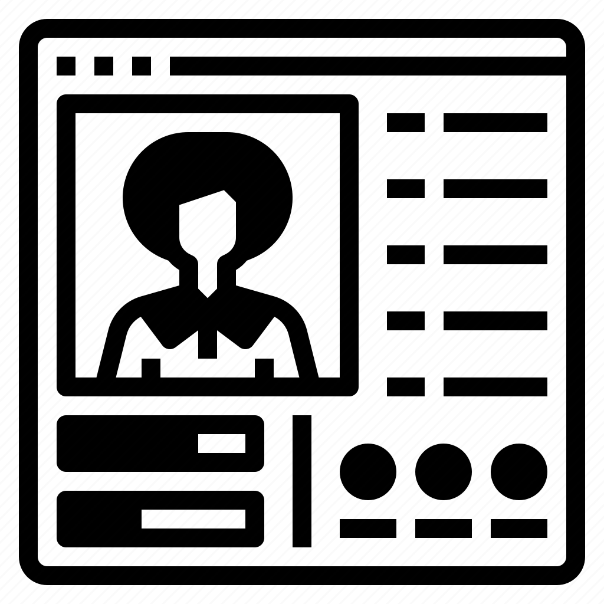
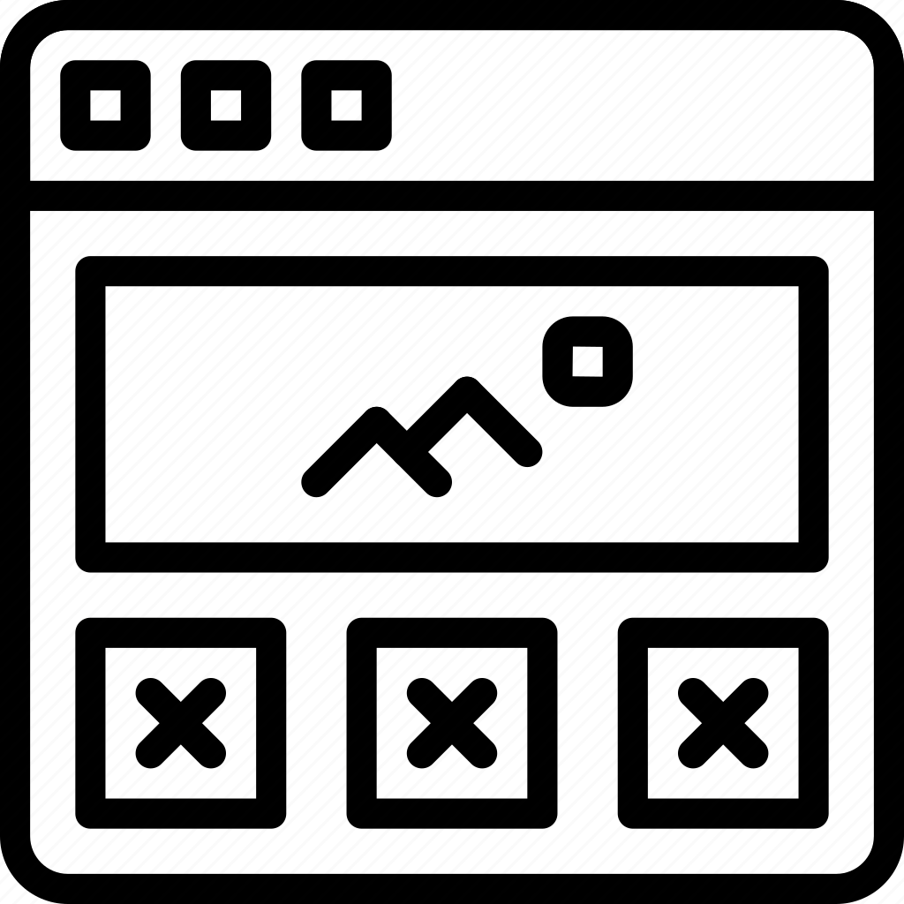
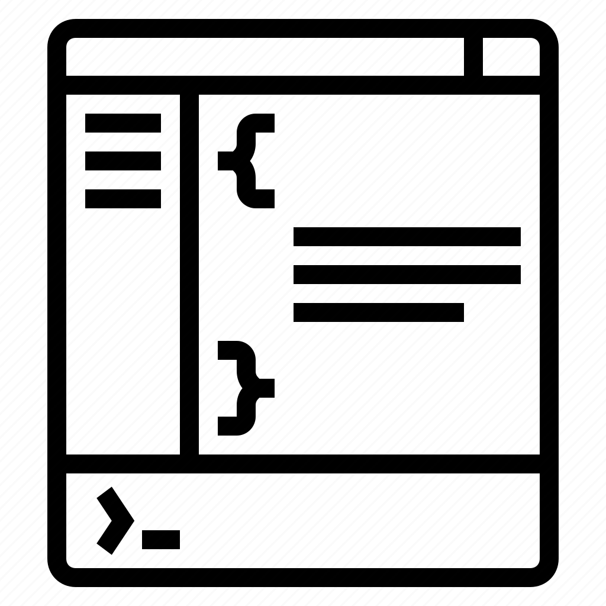
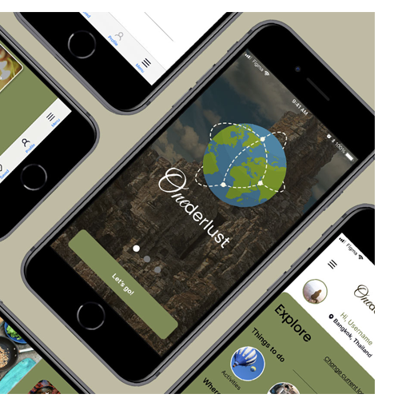
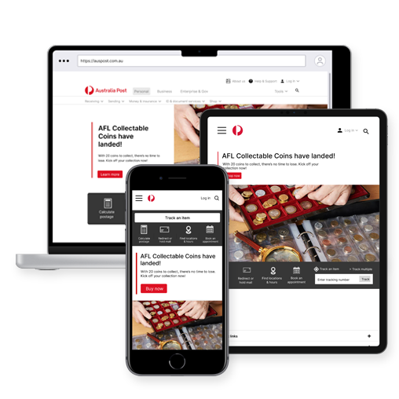

a self-motivated creative designer and web developer with a strong focus on designing exceptional user experiences.
Having 20 years in the creative and development world of e-commerce has allowed me to thrive on solving complex design problems and delivering innovative solutions that truly connect with users. What sets me apart is my background in cognitive science, which allows me to bring a unique perspective to my design approach, focusing on enhancing the user's cognitive experience.
VIEW MY RESUME
My UX Skills

User Research
As a user researcher, I apply a range of skills to gain deep insights into the behaviors, needs, and preferences of target users. Empathy and active listening are at the core of my skill set, allowing me to connect with users on a deep level and understand their perspectives. I excel in designing and conducting qualitative research methods, such as interviews, observations, and usability tests, to gather valuable user feedback. Additionally, I am proficient in quantitative research methodologies, employing surveys and data analysis to uncover meaningful patterns and trends. My expertise extends to creating user personas and journey maps to visualize user experiences effectively. Information architecture and data synthesis are also part of my skill set, helping me organize and interpret research findings to inform the design and decision-making processes. Collaborating with cross-functional teams is second nature to me, as I effectively communicate research findings and advocate for user-centric design solutions. My skills as a user researcher play a pivotal role in shaping products and services that meet user needs and drive positive user experiences.

User Interface
As a user interface (UI) designer, I possess a versatile set of skills that enable me to create visually stunning and user-friendly digital interfaces. I have a keen eye for aesthetics and a deep understanding of design principles, which I use to craft appealing layouts and delightful user experiences. Proficiency in design tools such as Adobe XD or Figma empowers me to bring my creative ideas to life and collaborate seamlessly with other team members. User empathy is a vital skill, as I continuously put myself in the users' shoes to ensure that the interface aligns perfectly with their expectations and needs. I excel in creating responsive designs that work seamlessly across various devices and screen sizes, optimizing the interface for user interactions. Additionally, I stay up-to-date with the latest design trends and best practices, allowing me to deliver modern and intuitive interfaces. My communication and presentation skills come into play when presenting design concepts and rationale to stakeholders, facilitating smooth feedback and iteration processes. As a UI designer, my skills blend artistry, empathy, and technical expertise to create interfaces that not only captivate users but also enhance their overall experience with digital products and services.

Web Development
As a web developer, I use a wide array of skills to design and build functional and visually engaging websites. Proficiency in programming languages like HTML, CSS, and JavaScript is fundamental, as they form the building blocks of web development. I leverage these languages to create the layout, design, and interactive elements of websites. I am skilled in responsive web design to ensure that websites work seamlessly across different devices and screen sizes. Moreover, I am familiar with version control systems like Git, enabling efficient collaboration and code management. Beyond technical skills, I possess problem-solving abilities to troubleshoot and debug issues that may arise during development. Keeping up with the latest web development trends and best practices ensures that I can create modern and optimized websites that meet the needs and expectations of users and clients. As a web developer, my diverse skill set allows me to turn creative ideas into fully functional and visually appealing web experiences.
My Work

Solo Travel App - UX Research Case Study
In this UX design research case study, we aimed to understand the unique needs and pain points of solo travelers in order to create a user-centric app that empowers them to effortlessly plan, navigate, and connect during their journeys.
VIEW WORK

Australia Post Website Redesign
Our objective was to revamp the Australia Post website by implementing a modern and intuitive user interface, improving user flow and accessibility, and enhancing overall user experience for a seamless and efficient postal service online.